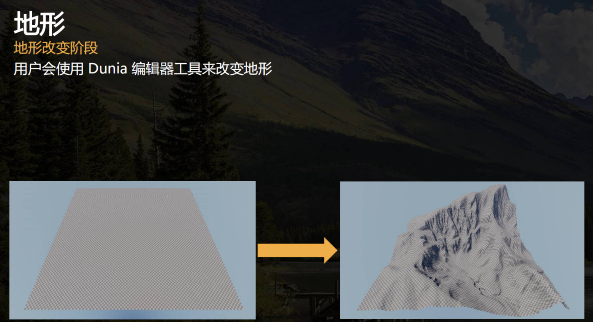
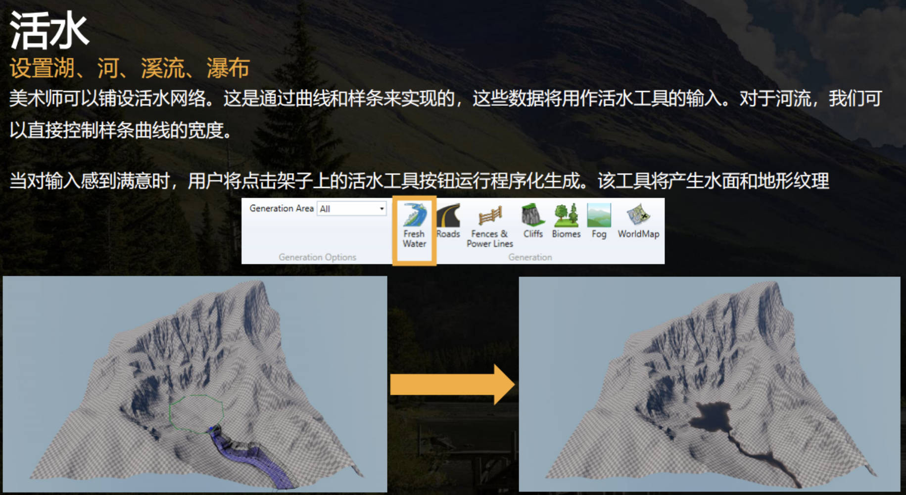
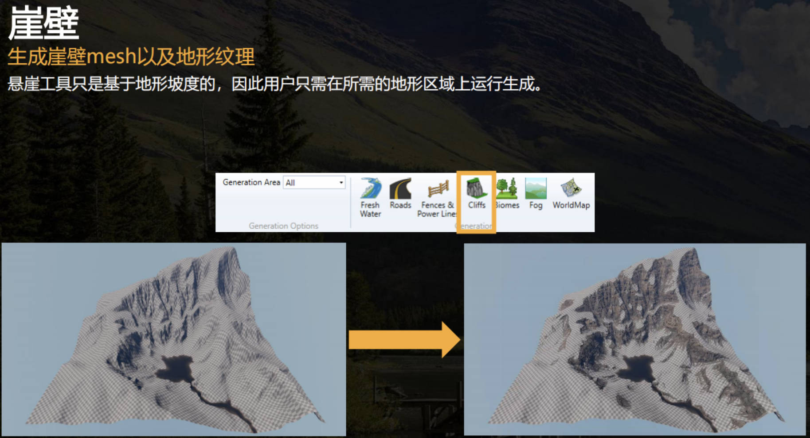
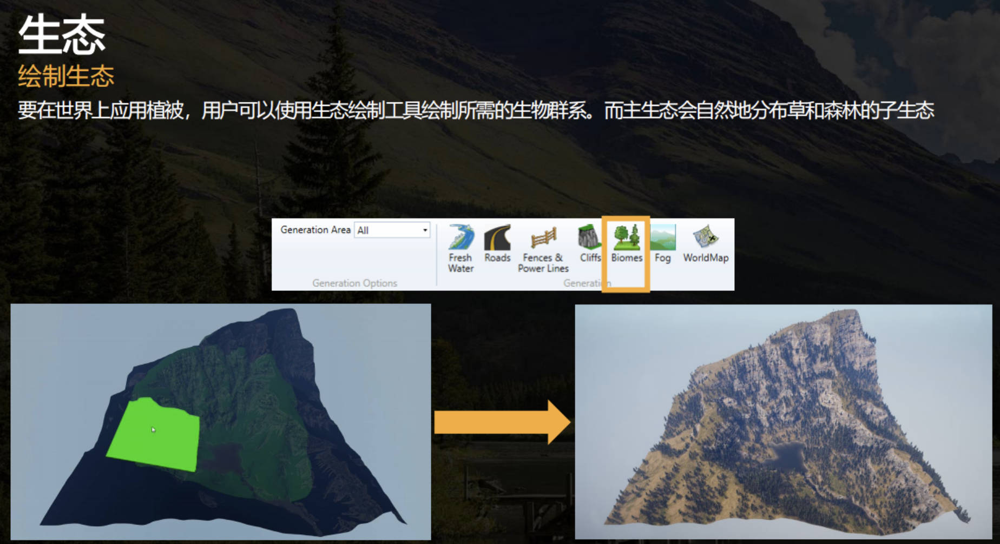

Terrain
Table of Contents
Terrain note.
<!– more –>
Unity Terrain 制作工具
总结
- Mesh Terrain Editor (Unity AssetStore 插件)
- 功能
- 可将 Unity Terrain 转化为 Mesh，也可以使用笔刷对 Mesh 顶点（顶点颜色，顶点位置）直接进行编辑
- 支持使用笔刷来散布花草
- 支持使用笔刷来绘制混合贴图
- 可将 Unity Terrain 转化为 Mesh，也可以使用笔刷对 Mesh 顶点（顶点颜色，顶点位置）直接进行编辑
- 优点
- 功能齐全，美术开发人员熟悉该工具使用
- 功能齐全，美术开发人员熟悉该工具使用
- 缺点
- 无源码，功能扩展需要找插件作者要源码
- 插件自带 Shader 是使用 Amplify Shader Editor 工具制作的，包含冗余变体。计算方式采用了 PBR ，对于二次元风格是不必要的消耗。
- 无源码，功能扩展需要找插件作者要源码
- 功能
- Unity Terrain Tools
- 功能
- 使用笔刷对 Terrain 进行编辑
- 支持使用笔刷来散布花草
- 支持使用笔刷来绘制混合贴图
- 使用笔刷对 Terrain 进行编辑
- 优点
- 官方的 Terrain 编辑工具，笔刷效果的可视化支持很强大，使用很便利。
- 官方的 Terrain 编辑工具，笔刷效果的可视化支持很强大，使用很便利。
- 缺点
- 不支持 Mesh 编辑
- Unity Terrain Shader 计算方式采用了 PBR ，对于二次元风格是不必要的消耗。
- 不支持 Mesh 编辑
- 功能
- Unity Polybrush Tools
- 功能
- 可以使用笔刷对 Mesh 顶点（顶点颜色，顶点位置）直接进行编辑
- 支持使用笔刷来散布花草
- 可以使用笔刷对 Mesh 顶点（顶点颜色，顶点位置）直接进行编辑
- 优点
- 开源免费，可以进行功能扩展
- 开源免费，可以进行功能扩展
- 缺点
- 散布花草的工具比较简陋，不支持随机大小
- 不支持使用笔刷来绘制混合贴图
- 散布花草的工具比较简陋，不支持随机大小
- 功能
- Houdini Unity Terrain
- 功能
- 程序化生成基础的地形
- 程序化生成地形上的元素（河流 峭壁 植被 道路 电网等等）
- 程序化生成基础的地形
- 优点
- 支持快速迭代
- 对需求变更友好
- 支持自动化散布地形元素
- 支持快速迭代
- 缺点
- Houdini 对美术不友好，需要节点编程
- 充分发挥 Houdini 地形制作优势，需要大量自定义功能开发
- Houdini 对美术不友好，需要节点编程
- 功能
Unity Terrain Tools
- Unity Terrain Tools https://docs.unity3d.com/Packages/com.unity.terrain-tools@4.0/manual/index.html
- Introduction to Terrain Editor https://www.bilibili.com/video/BV1E54y1r7tP/?spm_id_from=autoNext&vd_source=36597ac15683c2bddfe189d605ca1fa4
Unity Polybrush Tools
- Unity Polybrush Tools https://docs.unity3d.com/Packages/com.unity.polybrush@1.1/manual/index.html
Mesh Terrain Editor
Houdini Unity Terrain
Procedural World Generation of 'Far Cry 5'
使用引擎地形编辑器来生成地形

美术人员使用 Houdini 工具（活水工具）来生成湖泊，河流，溪流，瀑布
活水工具：采用曲线和样条来设置水的区域
生成的美术资产：水面 Mesh，水下地形纹理

美术人员使用 Houdini 工具（崖壁工具）来生成崖壁
崖壁工具：
生成的美术资产：崖壁 mesh 和对应的地形纹理

美术人员使用生态绘制工具来生成植被(树木，花草)
生态绘制工具：

上图中，我们选择并应用了一个 “主生态”，然后运行程序化生成。而主生态会自然地分布草和森林的 “子生态”。而且它会在靠近水的地方生成特定的资产，它还会避免在“崖壁腐蚀线”（由崖工具生成的）上生成植被。而且，在这种情况下，海拔也会产生影响，如较高的海拔上的树会更小。
参考资料
- Procedural World Generation of 'Far Cry 5' en https://www.gdcvault.com/play/1025557/Procedural-World-Generation-of-Far
- Procedural World Generation of 'Far Cry 5' 0 cn https://yaksue.blog.csdn.net/article/details/121177593
- Procedural World Generation of 'Far Cry 5' 1 cn https://yaksue.blog.csdn.net/article/details/121185766
- Procedural World Generation of 'Far Cry 5' 2 cn https://yaksue.blog.csdn.net/article/details/121261301
- Procedural World Generation of 'Far Cry 5' 3 cn https://yaksue.blog.csdn.net/article/details/121308380
- Building terrain with height fields https://www.sidefx.com/docs/houdini/model/heightfields.html
- Houdini+Unity Terrain 制作小小场景 https://zhuanlan.zhihu.com/p/389043482
Terrain Rendering
Unity Terrain Rendering
- 地形纹理合并 https://zhuanlan.zhihu.com/p/34397097
- unity32 层大地形采样性能优化 0 https://zhuanlan.zhihu.com/p/133516943
- unity32 层大地形采样性能优化 1 https://zhuanlan.zhihu.com/p/135596315
- 地形 5 种常见接缝的修复方案 https://zhuanlan.zhihu.com/p/599090863